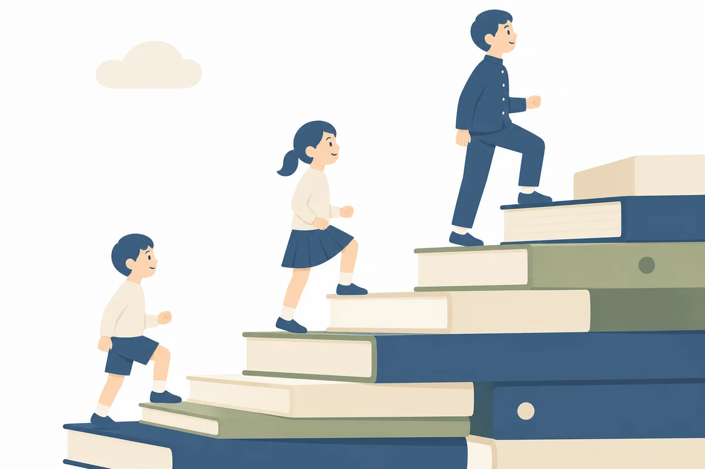
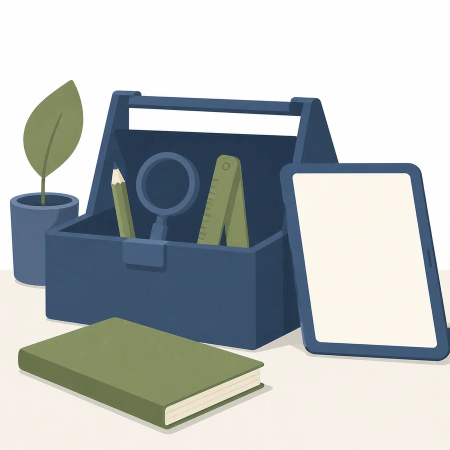
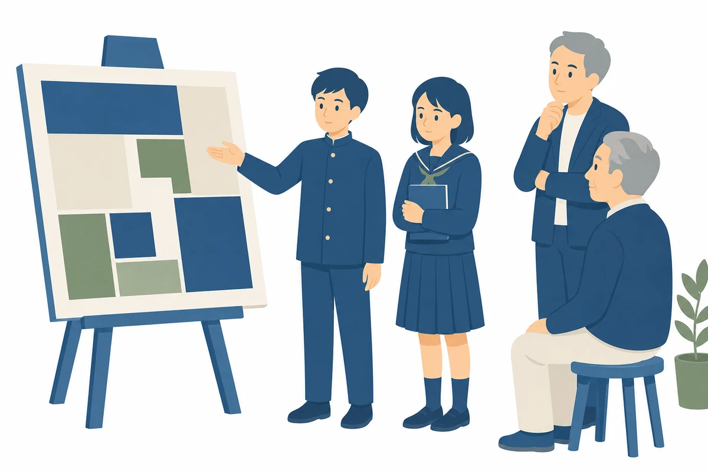

1
積み上げが見えるようになる
9年間の学びを1つにつなぐ「おおきた」は、碩田学園にしかない強みです。ただ、9学年分の年間構想と実践が一覧できる場所がないと、「うちの学年は9年間のどこを受け持っているのか」は、それぞれの先生の頭の中にしか残りません。棚が1つあると、1年部の先生が9年生の防災の学びまで見通せます。
研究の資料は、増えるほど散らばります。研修のスライドは資料箱の日付フォルダに、テンプレートはドライブに、決まったことは口頭とメモに。半年後の「あれ、どこでしたっけ」は、どの学校でも起きます。悪いのは人ではなく、置き場所が仕事ごとに分かれていることです。
9年間の学びを1つにつなぐ「おおきた」は、碩田学園にしかない強みです。ただ、9学年分の年間構想と実践が一覧できる場所がないと、「うちの学年は9年間のどこを受け持っているのか」は、それぞれの先生の頭の中にしか残りません。棚が1つあると、1年部の先生が9年生の防災の学びまで見通せます。
研修のたびにスライドと決定事項が1ページずつ貯まっていくと、次の研修は前回の続きから始められます。1年経てば研究のあゆみがそのまま残り、研究紀要の下書きになります。転入の先生は、このページを上から読むだけで追いつけます。
最初から大きくしません。トップに研究主題と「目指す児童生徒像」を置き、その下に6ページ。これで研究の全体が1か所に載ります。ページの器を先に作ってしまえば、あとは埋めるだけです。
研究主題の意味。「主体性＝どのように学ぼうとするかという姿」。前期・中期・後期それぞれの目指す姿。探究のサイクル（課題の設定→情報の収集→整理・分析→まとめ・表現）。
1〜9年部の年間計画構想シート。ドライブのフォルダをそのまま埋め込むので、フォルダに提出すれば棚は自動で最新になります。
校内研修1回ごとに1ページ。スライドのPDF、アンケート集計のグラフ、そして「決まったこと3行」。
「課題の設定」の工夫を、1実践1ページで貯めていきます。書く欄は5つだけ（後述のテンプレ）。
4年（自助）→7年（共助）→9年（公助）。各期の最終学年が防災を受け持つ縦のつながりを1枚で。他学年のテーマも一覧に。
ロイロ資料箱への行き方、研修アンケートのフォーム、テンプレ集、Gemini・Canvaへの入口。「あれどこ？」の答えを全部ここに。

全部をがんばる必要はありません。新しく覚えるのはGoogleサイトだけで、あとは今の使い方のまま組み込めます。
| 道具 | 役どころ | 「おおきた」研究での使いどころ |
|---|---|---|
| Google サイト | 貯める棚（今回つくるもの） | 研究主題・年間構想・研修のあゆみ・実践事例の置き場。職員はブックマーク1つでたどり着けます。 |
| ロイロノート | その日の授業の道具（今のまま） | 授業内の思考・提出・資料配付。子どもの名前が入るものはロイロ側に置きます。 |
| Google フォーム | 集める窓口 | 研修後アンケートと、児童生徒アンケートの定点観測。集計グラフをそのまま「研修のあゆみ」に貼れます。 |
| Gemini | 書く・描くの相棒 | 研修まとめの下書き、実践記録の整文。画像生成（ナノバナナ）でサイトの挿絵も自作できます（6節）。 |
| Gemini Notebook | 研究の質問窓口 | 研究構想・研修資料・年間構想シートを読み込ませておくと、「前期の主体性ってどう書くんだったかな」に出典つきで答えます。転入の先生の強い味方。 |
| Canva | 仕上げの化粧台 | ナノバナナで作った絵に文字を載せるのはCanvaの仕事。バナーや図解もここで。 |

長期休業中に、1〜3回に分けてやる分量です。順番どおりに進めば着きます。最初の一歩はStep 0の15分だけです。
Step 0〜6は構築期「仕組みにする」の仕事です。Step 9で全職員がブックマークした瞬間から、移転期「組織に手渡す」が始まります。研修で歩いた5段階の地図の、右半分を実際に歩く一件目として、ちょうどよい大きさです。
更新は研修の翌日までに1ページだけ。凝りはじめたら続きません。写真なし・3行でもページは成立します。提出物はドライブのフォルダ経由にして、サイトの手入れなしで最新が並ぶ形に。学期に1回、フォームで2問だけ聞きます：「サイトを開いたことがあるか」「探して見つからなかったものは何か」。見つからなかったものが、次に足すページです。
①児童生徒の氏名・顔写真・個別の記述は載せない（名前つきの実物はロイロ側に）。②アンケートの自由記述は、個人がわかる表現を削ってから。集計グラフは原則そのまま使えます。③市販素材・書籍の紙面など権利のあるものは校内限定でも慎重に。④公開範囲は「組織内の全員・閲覧のみ」。外に見せたくなったら、公開版は別サイトとして新しく作り、載せるものを選び直します。
Geminiの画像生成（愛称ナノバナナ）で、棚の挿絵を自作できます。自作の絵なら権利の気兼ねがなく、サイトにも研究紀要にも使い回せます。下のプロンプトはコピーしてそのまま使えます。
| 約束 | 理由 |
|---|---|
| 文字・数字は描かせない | 画像の中の日本語は崩れます。文字の仕事は全部Canvaへ。プロンプトにも「文字は入れない」と毎回書きます。 |
| スタイル文を毎回同じにする | 下の共通文を全プロンプトの末尾に付けると、サイト全体の絵のトーンがそろいます。 |
| 比率を先に言う | バナーは「横長16:9」、アイコンは「正方形」。あとから切ると構図が崩れます。 |
| 2〜3案出して選ぶ | 「同じ内容で構図違いを3案」と頼めます。1発で決めようとしないのが早道です。 |
| 検品してから使う | 手の指・人数・不自然な物を確認。おかしければ手2の部分直しで整えます。 |
フラットデザインのシンプルなベクターイラスト。白背景。輪郭線は使わない。 黄色・ネイビー・赤・水色を基調にした明るく親しみやすい配色。 人物は顔の細部を描き込まないシンプルな形。影は最小限。 文字や数字は一切入れない。
※ 以下のプロンプト①〜⑨には、この共通文をあらかじめ組み込んであります。そのままコピーして使えます。色はお好みで差し替えてください。
横長16:9のイラストを作ってください。小学生と中学生が一緒に、海の見える大分のまちを 探検している場面。虫めがねを持つ低学年の子、タブレットを持つ高学年の子、地図を広げる 中学生。背景に街並みと海と山をシンプルな形で。画面の上3分の1は空にして、あとで文字を 載せられる余白にする。フラットデザインのシンプルなベクターイラスト。白背景。輪郭線は 使わない。黄色・ネイビー・赤・水色を基調にした明るく親しみやすい配色。人物は顔の細部を 描き込まないシンプルな形。影は最小限。文字や数字は一切入れない。
正方形のイラストを作ってください。低学年の小学生が2人、通学路で立ち止まって、まちの 様子を指さしている。1人の頭の上に中身が空っぽの吹き出しを浮かべて、疑問を見つけた瞬間を 表す。フラットデザインのシンプルなベクターイラスト。白背景。輪郭線は使わない。黄色・ ネイビー・赤・水色を基調にした明るく親しみやすい配色。人物は顔の細部を描き込まない シンプルな形。影は最小限。文字や数字は一切入れない。
正方形のイラストを作ってください。小学校高学年から中学1年くらいの子どもが2人、商店街で 働く大人にインタビューしている場面。1人はタブレットでメモ、1人は身ぶりで質問している。 大人は笑顔で答えている。フラットデザインのシンプルなベクターイラスト。白背景。輪郭線は 使わない。黄色・ネイビー・赤・水色を基調にした明るく親しみやすい配色。人物は顔の細部を 描き込まないシンプルな形。影は最小限。文字や数字は一切入れない。
正方形のイラストを作ってください。中学生が3人、大人たち（地域の人と先生）の前で スクリーンを使って提案発表をしている場面。スクリーンの中身はグラフ風の抽象的な図形だけに する。聞いている大人はうなずいている。フラットデザインのシンプルなベクターイラスト。 白背景。輪郭線は使わない。黄色・ネイビー・赤・水色を基調にした明るく親しみやすい配色。 人物は顔の細部を描き込まないシンプルな形。影は最小限。文字や数字は一切入れない。
正方形のイラストを作ってください。小学生が教室で机の下に身を隠して頭を守っている場面。 そばに非常持ち出し袋。落ち着いた表情で、こわがらせない明るい雰囲気にする。フラット デザインのシンプルなベクターイラスト。白背景。輪郭線は使わない。黄色・ネイビー・赤・ 水色を基調にした明るく親しみやすい配色。人物は顔の細部を描き込まないシンプルな形。 影は最小限。文字や数字は一切入れない。
正方形のイラストを作ってください。中学生が避難訓練で、お年寄りに寄りそって一緒に歩いて いる場面。周りに地域の人が数人。助け合うあたたかい雰囲気。フラットデザインのシンプルな ベクターイラスト。白背景。輪郭線は使わない。黄色・ネイビー・赤・水色を基調にした明るく 親しみやすい配色。人物は顔の細部を描き込まないシンプルな形。影は最小限。文字や数字は 一切入れない。
正方形のイラストを作ってください。中学生が体育館の避難所の見取り図を大きな紙で広げ、 地域の大人と一緒に改善のアイデアを話し合っている場面。見取り図の中身は色分けした四角形 だけの抽象的な図にする。フラットデザインのシンプルなベクターイラスト。白背景。輪郭線は 使わない。黄色・ネイビー・赤・水色を基調にした明るく親しみやすい配色。人物は顔の細部を 描き込まないシンプルな形。影は最小限。文字や数字は一切入れない。
正方形のイラストを4枚、同じ絵柄で作ってください。どれも小学生1〜2人のシンプルな場面で、 (1)虫めがねを持って空っぽの吹き出しを浮かべる「課題を見つける」、(2)本とタブレットと インタビューで調べる「情報を集める」、(3)たくさんの付箋をボードに並べかえる「整理して 分析する」、(4)みんなの前で発表する「まとめて伝える」。フラットデザインのシンプルな ベクターイラスト。白背景。輪郭線は使わない。黄色・ネイビー・赤・水色を基調にした明るく 親しみやすい配色。人物は顔の細部を描き込まないシンプルな形。影は最小限。文字や数字は 一切入れない。
横長で細い帯状（横4：縦1）のイラストを3枚作ってください。(1)本棚にファイルが並び 1冊だけ黄色い「あゆみ」、(2)ノートの上に光る電球が1つ「実践のひらめき」、(3)開いた 道具箱から道具が少しのぞく「道具箱」。どれも小物だけの静物で、人物は入れない。フラット デザインのシンプルなベクターイラスト。白背景。輪郭線は使わない。黄色・ネイビー・赤・ 水色を基調にした明るく親しみやすい配色。影は最小限。文字や数字は一切入れない。
このページの挿絵も、同じ考え方で作った自作素材です（スタイルの指定文を固定して、画像生成AIに描かせて、検品してから使う）。道具は違いますが、やっていることはこのプロンプト集と同じです。
職員の棚として回り始めたら、総合的な学習の時間のプロジェクトとして、子どもの側に開いていけます。ここまで来ると、棚づくりは研究主題の実践そのものになります。
たとえば「避難所の改善案を学校に提案する」というゴールの先に、「提案がサイトに残り、次の9年生が引き継ぐ」を置きます。まとめ・表現の相手が「先生」から「学校と地域、そして来年の後輩」に変わると、課題の設定に必然が生まれます。4年・7年の学びの足あとも期の終わりに1ページずつ残せば、自助→共助→公助の積み重なりが実物で見えるようになります。
Gemini Notebookに研究構想・研修資料・年間構想シートを読み込ませておくと、「この学年の主体性の書き方は」「前回どこまで決まったか」に出典つきで答える窓口になります。来年度の転入の先生が、過去の経緯を人に聞かなくても追いつけます。

このページの一歩はひとつだけです。Step 0「管理者に確認する」。15分で終わります。それが済めば、あとは4節の順番どおりに進めば着きます。作りながら迷ったら、いつでもご連絡ください（トップページの相談窓口から）。